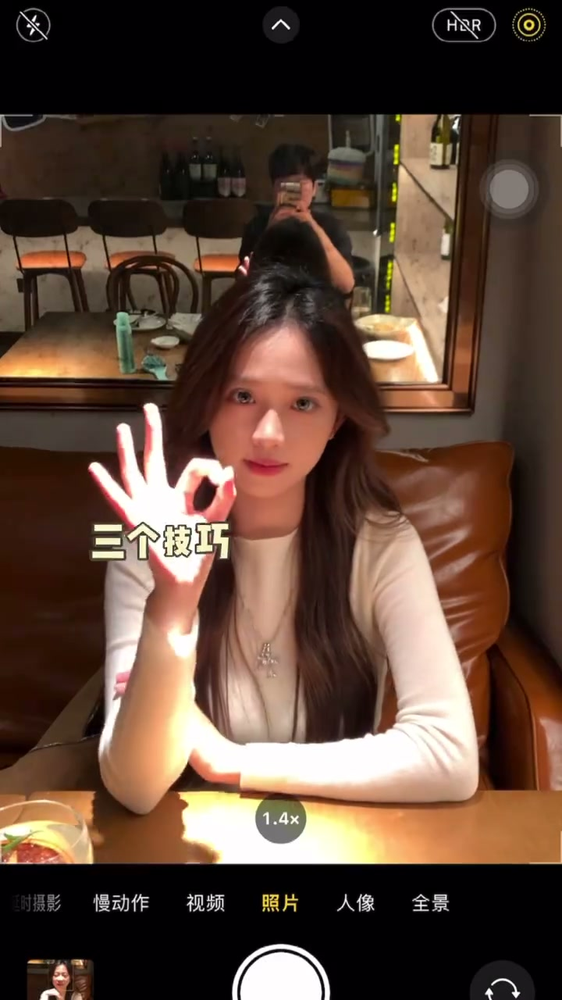
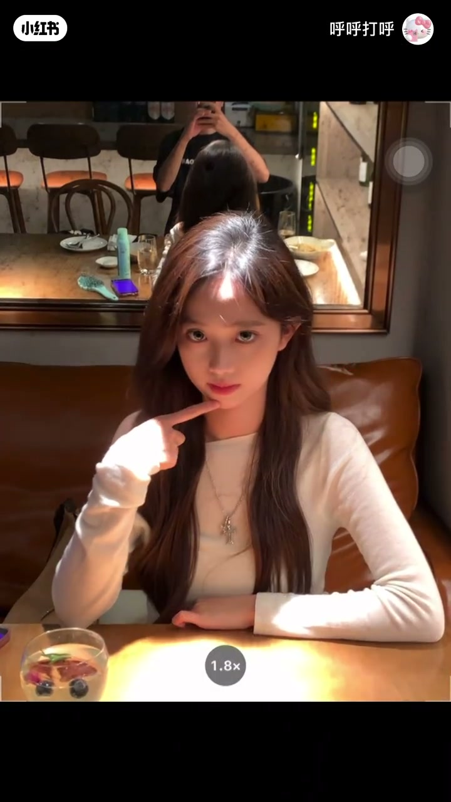
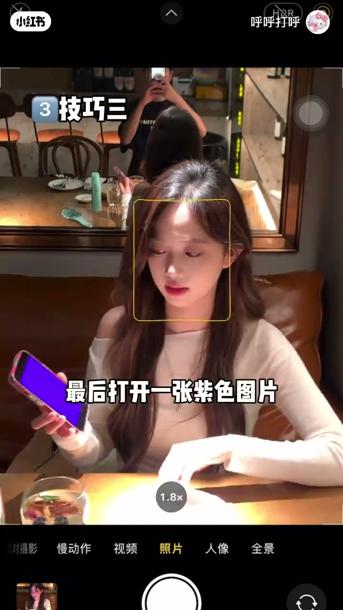

内容要点
一支 47 秒的餐厅拍照急救指南：博主演示在餐厅顶光下拍照的三个技巧——让工具人走到脸好看的一边放大 1.9 倍、把向光侧头发放前面接光、脸黑时用盘子当反光板、最后用紫色图片加屏幕亮度营造氛围感。
知识结构
[00:00→00:23]
技巧一：利用顶光与头发
工具人走到脸好看的一边，放大 1.9 倍，把向光一侧头发放前面，让光打在头发上再把脸移过来。
[00:23→00:44]
技巧二：盘子当反光板
脸很黑时拿盘子当反光板补光，对比非常明显；配合发胶打理头发。
[00:44→00:47]
技巧三：氛围灯
打开一张紫色图片，把屏幕调亮，照片更有氛围感。
总结
餐厅顶光三招：①找对拍摄角度让头发接光 ②盘子当反光板给脸补光 ③紫色图片+屏幕调亮营造氛围感。
技巧一：头发接顶光
让工具人走到你脸好看的一边，放大 1.9 倍，看好顶光的位置，把向着光的一侧头发放到前面来，让光打在头发上再把脸移过来，顶光变发色灯。

技巧二：盘子当反光板
太正面不能微微低头，脸很黑怎么办？拿一个盘子当反光板，对比真的很明显。博主还用喷雾打理大油头，喷出来是细腻水雾清新木质调，用梳子打理即可。

技巧三：紫色图片氛围灯
最后打开一张紫色图片，把屏幕调亮，配合顶光下的造型，照片更有氛围感。
